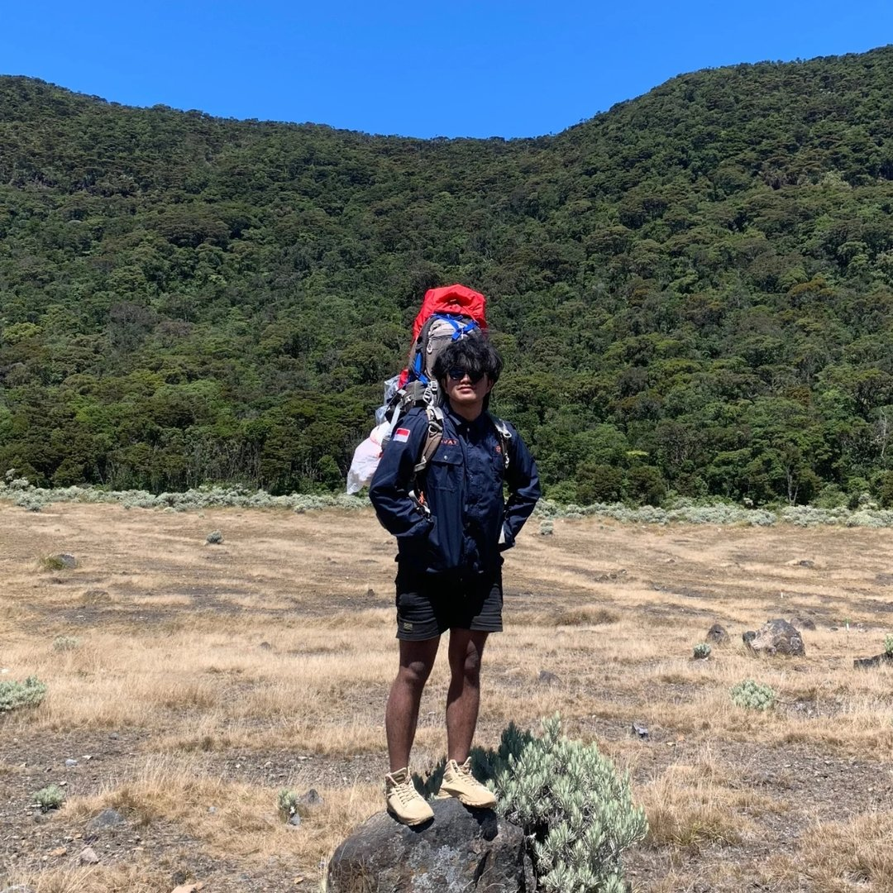

Tentang Saya

- Nama Zaidan Ammar
- Lahir Jakarta Timur, 4 Juni 2003
- Kampus Universitas Paramadina
- Organisasi Khatulistiwa MAPA Paramadina
- Jabatan Ketua Umum 2026–2027
- Email zaidan@email.com
- Status Terbuka untuk Proyek
Saya Zaidan, developer yang juga seorang pelaku alam bebas.
Lahir di Jakarta Timur pada 4 Juni 2003, saya tumbuh dengan ketertarikan kuat terhadap teknologi dan alam. Dua hal yang pada permukaan tampak berlawanan, tapi bagi saya justru saling memperkuat — disiplin di lapangan membentuk cara saya berpikir dalam menulis kode.
Sebagai Ketua Umum Khatulistiwa MAPA Paramadina periode 2026–2027, saya terbiasa memimpin tim di kondisi ekstrem, membuat keputusan cepat, dan menjaga kelompok tetap solid. Pengalaman ini langsung terbawa ke cara saya mengelola proyek-proyek digital di lingkungan kampus maupun luar kampus.
Organisasi
Mahasiswa Pecinta Alam Universitas Paramadina. Memimpin kegiatan pendakian, panjat tebing, SAR, dan pembinaan anggota baru. Membangun budaya organisasi yang disiplin, solid, dan bertanggung jawab terhadap alam.
Minat & Kegiatan
Riwayat Pendidikan
Pengalaman & Keterlibatan Proyek
| Program / Kegiatan | Penyelenggara | Tahun |
|---|---|---|
| Dashboard Belanja APBD Kemendagri | Kemendagri RI | 2024 |
| Satgas PPKPT Paramadina | Universitas Paramadina | 2023–2024 |
| KantinHub — Aplikasi Kantin Kampus | Proyek Kampus | 2024 |
| MECX Platform | Proyek Kampus | 2024 |
| Ketua Umum Khatulistiwa MAPA | Universitas Paramadina | 2026–2027 |